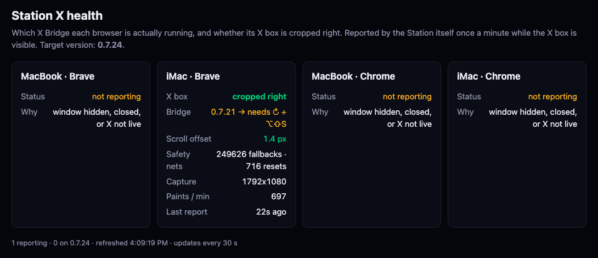

The 4 am reload
Every night, at the first quiet moment after 4 am, the Station is reloaded, X is reloaded, the X extension is run again, and the job checks that X came back. If it did not, one line is waiting on your screen in the morning.
Written 7 Oct 2026. Nothing is switched on. The job is written and checked as far as it can be without touching one of your windows; it has not reloaded anything and has not pressed any key. It needs two things from you: one switch in System Settings, and about ten minutes with you watching.
What happens at 4 am
It never quits an app, never opens one, never closes a window, and never touches a window that is not the Station or X. If you come back while it is working, it stops pressing things at once.
What I found
It is the only machine with a live X box. Its Brave reported "X is working" 1,438 times in the last 24 hours (once a minute is the most there can be), and 90 times in the 90 minutes between 03:30 and 05:00 on each of the last two nights.
The Station reports only while its window is on screen, so at 4 am the iMac is awake and showing the Station. That is what this job needs. Whether its screen is also unlocked at that hour is what the one night of watching in the test plan proves.
Neither its Brave nor its Chrome has shown X in the Station in the last four days. This afternoon no Hub, Station or X app window was open on it at all.
It is set to lock its screen when left alone. A key pressed into a locked screen goes to the lock screen, not to X, so on those nights the job would do nothing on the MacBook.
Since this afternoon a Hub that has been open four hours or more reloads itself between 3 and 5 am and comes back in the room, list and company where you left it.
A reload from outside cannot do that: the Hub would come back on its first screen every morning. So this job leaves the Hub alone. One setting turns it on if you want it.
How the job knows X is working

While its X box is fed and on screen, the Station writes one line a minute: is the picture cropped right, how many frames it drew, which copy of the extension is running.
After pressing the shortcut the job asks: is there a line from this browser, newer than my key press, cropped right and drawing? Yes means X is back. No, twice, means the note.
Two things this picture also says:
- The iMac's Brave runs extension 0.7.21 and the page wants 0.7.24, which is why that line is amber. The extension updates itself only at a moment when it is not feeding the Station. The night reload creates that moment, and the shortcut the job presses is what a freshly updated extension needs.
- The Station reports only while its window is on screen. If the Station is hidden behind something at 4 am, the job brings it forward for the check.
The one permission
macOS lets a program press menus and keys in other apps only if you allow that program by name. The job has its own small app for this, Scintilla Night Reload, so the switch covers this job and nothing else.
- Apple menu, top left of the screen → System Settings…
- In the left column, scroll down and click Privacy & Security.
- On the right, click Accessibility.
- Click the + under the list. macOS asks for your password or Touch ID.
- In the file window press Command + Shift + G, type
~/Scintilla/night-reload, press Return. - Click Scintilla Night Reload, then Open.
- Check that the switch beside Scintilla Night Reload is on.
One more click, once: the first time the job looks at your windows, macOS shows a box asking whether Scintilla Night Reload may control "System Events". Click Allow. That is macOS's own window helper; the job never talks to Brave or X directly.
These are the names in the current macOS. I did not open System Settings on your screen to photograph it; the picture is a drawing.
The test plan
| Step | What happens | What it proves | Needs you |
|---|---|---|---|
| Done today | 20 checks of the job's decisions with stand-ins for the Mac; a real look-only run on the MacBook with the window part switched off; the launcher app built and started in nightly mode at 16:05, where it refused because it was not night. | The order of the steps, every "do nothing" case, the single retry, the note, the live read of "is X working", and that it cannot act in the daytime. | No |
| 1 · Install | The files are copied to ~/Scintilla/night-reload on the iMac and its small app is built there. Nothing is switched on. | Nothing yet. | Your go |
| 2 · Permission | The seven clicks above, then Allow on the box. | macOS lets the job look. | Your hands, 1 minute |
| 3 · Look only | Double-click Scintilla Night Reload. It shows what it sees and what it would do tonight. It reloads nothing and presses nothing. | That it finds the iMac's Station and X windows, finds their reload menu item, and reads the right line of the health log. | You watching, 1 minute |
| 4 · The real thing, once | At a quiet moment outside trading hours: hands off for 20 seconds, then the Station reloads, X reloads, and X returns in the Station within a minute or two. | That macOS delivers the menu press and the shortcut. This is the part nothing but a real try can prove. | You watching, about 3 minutes |
| 5 · One night watching only | Switched on with the Station reload turned off in its settings. At 4 am it writes what it saw and touches nothing. | That at 4 am the iMac's screen is unlocked, nobody is there, and the windows are found. | No |
| 6 · On | The setting is turned back on. Each morning one line says what happened; the health log shows a short gap just after 4 am and then X reporting again. | It works unattended. | No |
If step 4 leaves X dark: click the X window and press Option+Shift+S, as you do today. Nothing else is affected.
Switching it off
One command stops the timetable and deletes it; with --all it also deletes the folder, the small app and the two logs. The entry in Accessibility is removed by hand: select it, click the minus sign.
What could be wrong
- No real window has been tried. Today's rule was no key presses on your screen. Whether macOS delivers the menu press and Option+Shift+S to a Brave app window the way the job expects is proved only by step 4. The job is built to stop early: every answer it does not expect means "do not go on", and it reaches X before it reloads the Station.
- The iMac was not looked at. That its Station and X are Brave app windows comes from your words. If X there is an ordinary Brave tab instead, the job will say so in step 3 and leave everything alone.
- A locked screen stops it. On a Mac that locks at night the job reloads nothing and says so in the morning.
- Two X windows stop it. It cannot tell which one feeds the Station, so it reloads nothing and says so.
- Which line of the health log is "this browser" is an 8-character id that changes if Brave's saved data for the Station is ever cleared. The job would then say it could not confirm X, and leave the note.
- On a night the Mac restarts itself nobody is signed in at 4 am, the job does not run, and X needs your shortcut in the morning as it does today.
- The Station's own night reload must stay off on a Mac that runs this job. It exists on a branch and is not live. Two reloaders would race, and the later one would leave X unconnected with nobody there.
- Stage Manager. Bringing an app forward changes the stage. The job puts back the app that was in front, but the strip at the side may be in a different order in the morning.
What I did not do
- I did not switch the job on, and did not install it on either Mac. The files exist only in the Hub's code, on a branch.
- I did not reload any window or press any key, and did not open System Settings.
- I did not touch the iMac.
- I did not run the Hub's whole test suite: it opens many test browsers against the live site, which is what slowed live prices this morning. I ran only this job's own 20 checks.
- I did not change the Hub, the Station, the extension or any table.
Three calls for you
- Which Mac? Recommendation: the iMac only. It is where X runs and where memory is the problem; the MacBook locks itself at night and would mostly do nothing.
- Should this job also reload the Hub? Recommendation: no. The Hub's own night reload brings it back where you left it; this job would bring it back on its first screen.
- When do we test? Recommendation: ten minutes at the iMac after 8 pm or at the weekend. Steps 1 to 4 fit in that.
PAGE SPECS
Everything is in deliverables/20261007/nr1-night-reload/ on the branch hub/nr1-night-reload-20261007.
| File | What it is |
|---|---|
| kit/night-reload.sh | The job. Three ways to start it: dry-run (looks only), test (the real thing now, for step 4), run (nightly; refuses outside 04:00 to 05:30 and while the Mac is in use). |
| kit/gui.applescript | The only file that touches windows, through macOS's System Events. It types a key only when the app in front, read at that instant, is the app it was asked for. |
| kit/launcher.applescript | Source of the small app "Scintilla Night Reload", the one item in Accessibility. Double-clicked, it does a dry run. |
| kit/com.scintilla.night-reload.plist | The timetable, as a template: nine tries, 04:00 to 05:20, ten minutes apart. It cannot run until install.sh fills in the home folder and switch-on.sh loads it. |
| kit/config.example.env | Settings per Mac: the window, the idle time, which browser, Hub on or off, the health-log id, the waits. |
| kit/install.sh | Copies the kit to ~/Scintilla/night-reload and builds the small app there. Switches nothing on. |
| kit/switch-on.sh | Loads the timetable. Only after your go. |
| kit/rollback.sh | Unloads the timetable and deletes it; --all also deletes the folder, the app and the logs. |
| tests/nr1-night-reload.test.mjs | The 20 checks. Run with node --test tests/nr1-night-reload.test.mjs. |
The commands, on the Mac that will run it
bash kit/install.sh # step 1: install, nothing switched on
open ~/Scintilla/night-reload/"Scintilla Night Reload.app" # step 3: look only
open ~/Scintilla/night-reload/"Scintilla Night Reload.app" --env SCINTILLA_NIGHT_RELOAD_MODE=test # step 4: the real thing, now
~/Scintilla/night-reload/switch-on.sh # steps 5 and 6: the timetable on
~/Scintilla/night-reload/rollback.sh # off ~/Scintilla/night-reload/rollback.sh --all # off and gone
Each morning: ~/Scintilla/night-reload/LAST-NIGHT.txt holds one line; the full record is ~/Library/Logs/scintilla-night-reload.log.
Where the numbers come from
- 1,438 and 90: lines in the table
station_x_healthfrom the browser whose id begins 58feb66c ("iMac · Brave" on the health page), counted 7 Oct 15:46 ET. The night of 5 Oct had none between 03:30 and 05:00. - The MacBook's lock: its screen-saver and screen-lock settings, read with macOS's own commands. The values are in the return to the coordinator, not on this page.
- The web apps installed on the MacBook: Chrome has SCINTILLA (the Hub), SCINTILLA Station and X; Brave has SCINTILLA Station. Only Chrome itself was running; Brave was not.
- The shortcut: the extension's
manifest.jsonbinds Option+Shift+S to its button;background.jsstarts a fresh capture when the tab in front is X, and brings an X tab forward (or opens one) when it is not, which is why the job checks first. - The picture of the health page was taken by a test browser with no window. Test browsers here may send nothing but plain reads, so the page's own request was answered with the same rows read a second earlier by a plain read.
Its neighbours, kept as they are
- The Hub's own night reload (03:00 to 05:00, keeps your place): untouched.
- The Station's self-update for a new build, and the extension's self-update: untouched.
- The MacBook's weekly restart at 03:30 and its memory guard: untouched. This job copies their pattern: several timetable times, "only inside the window", "only when nobody touched the Mac", a dry run.
For the coordinator: did it run last night?
Without reading a file on the iMac: count the health log's lines for 58feb66c minute by minute between 03:50 and 05:40 ET. A gap of one to three minutes just after a try means the reload ran and X came back; no gap means it did not run; a gap that never closes means X was left dark.